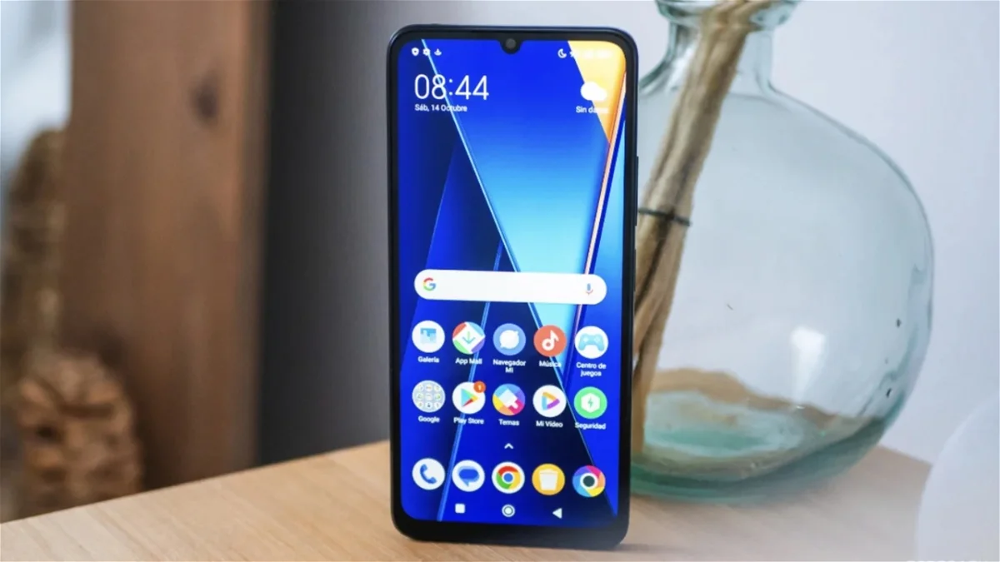
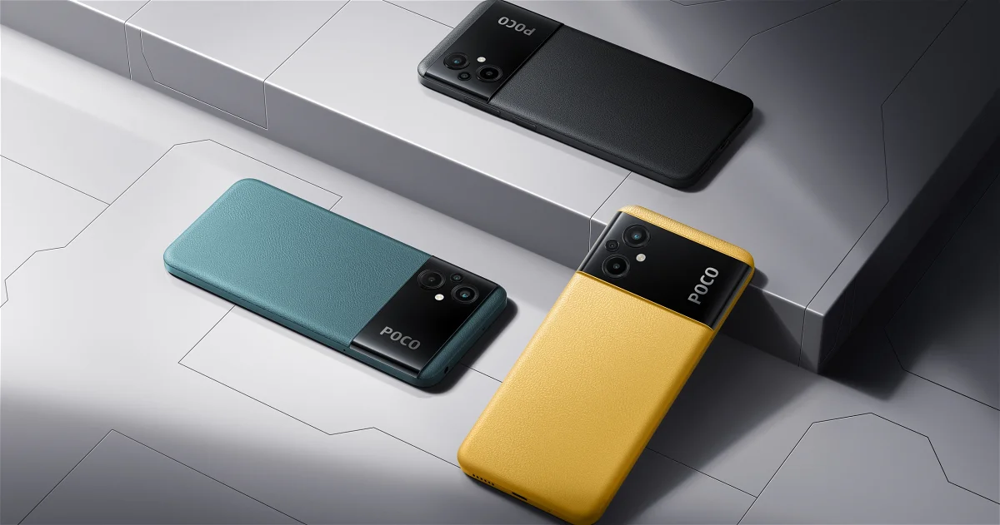
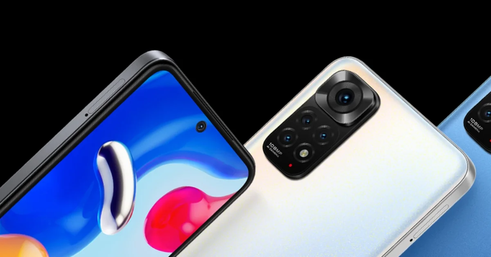
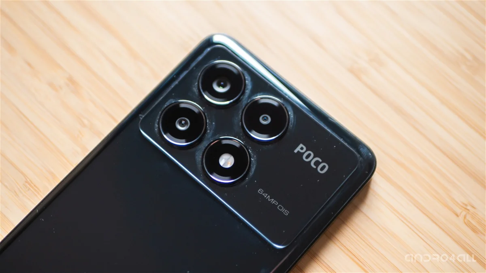
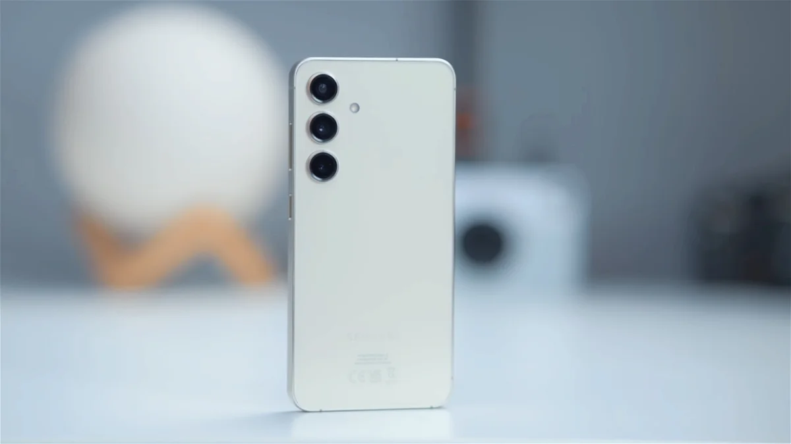
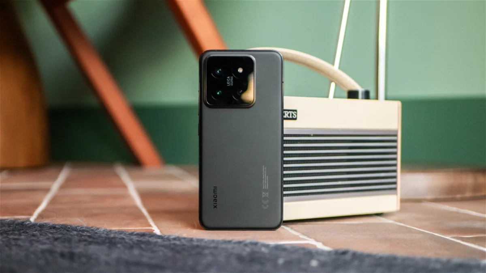

Tipos De Celulares Y Gamas: Baja, Media Y Alta
POCO C65
En la gama baja brilla con luz propia el POCO C65, un móvil que hemos analizado y que nos parece que no puede ofrecer más por su precio. Lo primero que sorprende de este smartphone es su diseño, pues tiene una calidad de construcción superior a la que podríamos esperar. La sensación al usarlo es muy agradable gracias a su trasera acabada en mate que, además, también resulta muy bonita en tonos como el morado. Entre las grandes bazas del POCO C65 se encuentra también la pantalla LCD de 6,74 pulgadas ubicada en su frontal, con una resolución HD+ (1600 x 720 píxeles), 90 hercios de refresco y brillo de 600 nits. La calidad de las imágenes es buena teniendo en cuenta el precio del teléfono, especialmente por la fluidez y el brillo. Por otro lado, el chip MediaTek Helio G85 ofrece un buen rendimiento ante las tareas más comunes. En la ficha técnica del teléfono también brilla la cámara trasera de 50 megapíxeles, de calidad superior a lo habitual en esta gama de entrada. Además, el POCO C65 puede alcanzar las 2 jornadas de uso gracias a la gran batería de 5.000 mAh que equipa en su interior. Batería que, por cierto, admite carga rápida de 18W. El POCO C65 tiene un precio de 149,99 euros en el modelo de 6GB+128GB y de 169,99 euros en el de 8GB+256GB.
POCO M5
El POCO M5 también destaca dentro del segmento de la gama baja. Entre los colores en los que lo puedes comprar no falta el ya común amarillo POCO, muy característico de la firma china. Si nos fijamos en su frontal, nos topamos con una pantalla LCD IPS de 6,58 pulgadas, resolución Full HD+ y, atención, tasa de refresco de 90 Hz. De esta forma, podrás disfrutar de imágenes nítidas y muy fluidas. El MediaTek Helio G99 es el procesador que trabaja en el interior, al que le podemos pedir que ejecute con facilidad tareas como conversar por WhatsApp, abrir Instagram o ver vídeos en YouTube. Pese a ser un móvil barato, ya llega con MIUI 12 basado en Android 12, no tendrás que esperar que actualice su sistema operativo. Este POCO M5 tiene una triple cámara trasera, aunque el sensor más útil es el principal de 50 MP, toma buenas fotografías cuando la luz acompaña. La experiencia queda respaldada por una enorme batería de 5.000 mAh a la que le podemos pedir más de una jornada de autonomía.
Xiaomi Redmi Note 11S
Por poco más de 200 euros puedes comprar el Xiaomi Redmi Note 11S, que guarda alguna que otra joya en su ficha de características. Es un móvil ligero, con un peso de 179 gramos, con la mayor parte del frontal ocupada por una pantalla AMOLED de 6,43 pulgadas, resolución Full HD+ y tasa de refresco de 90 Hz. El procesador que trabaja en el interior es el MediaTek Helio G96, del que podemos esperar un buen rendimiento. Además, tiene una cámara principal de 108 MP, un gran angular de 8 MP y dos sensores secundarios de 2 MP. Otro punto fuerte es su batería de 5.000 mAh con carga rápida de 33W, que no sufrirá para superar la jornada de autonomía. El Xiaomi Redmi Note 11S tiene un precio original de 249,99 euros en el modelo de 6GB+64GB y de 279,99 euros en el de 6GB+128GB.
Xiaomi Redmi Note 13 Pro+ 5G

El Redmi Note 13 Pro+ 5G derrocha calidad en todos sus apartados, también es una gran elección en la gama media. Bajo su chasis trabaja el procesador MediaTek Dimensity 7200-Ultra, al que no le cuesta mover cualquier aplicación que quieras usar. Ya sea para jugar, para ver vídeos o para editar imágenes, el Redmi Note 13 Pro+ 5G mantiene el tipo gracias a su gran potencia. En el frontal se ubica una pantalla AMOLED de 6,67 pulgadas con resolución 1,5K (2.712 x 1.220 píxeles) y 120 hercios de refresco, con 1.800 nits de brillo. No importa lo que quieras ver en esta pantalla, siempre obtendrás buenos resultados. Por ejemplo, en este panel podrás disfrutar de las espectaculares fotos que hagas con la cámara trasera de 200 megapíxeles, a la altura de las lentes de móviles mucho más caros. El Redmi Note 13 Pro+ 5G también se caracteriza por ofrecer una buena autonomía en el día a día. De ello se encarga una batería de 5.000 mAh que se carga en solo 20 minutos gracias a la brutal carga rápida de 120W.
POCO X6 Pro 5G
El análisis del POCO X6 Pro 5G fue más que suficiente para confirmar que es una compra excelente dentro de la gama media. Uno de los motivos es que ofrece un rendimiento propio de la gama alta gracias al procesador MediaTek Dimensity 8300 Ultra. Este chip le convierte en toda una bestia que puede ejecutar las apps más exigentes con una fluidez tremenda. Entre sus puntos fuertes también se encuentra la pantalla AMOLED de 6,67 pulgadas, resolución 1,5K, 120 hercios de refresco y un brillo de hasta 1800 nits. Las imágenes son realmente buenas, por lo que podrás disfrutar al máximo del contenido multimedia y de los juegos. Ojo, también es interesante mencionar que este POCO X6 Pro 5G viene con HyperOS 1.0 basado en Android 14, el nuevo software de Xiaomi. 3 son las cámaras que monta en su trasera, con la presencia destacada de la lente de 64 megapíxeles. Por otro lado, la batería de 5.000 mAh no sufre para llegar al final del día con energía restante. Al ser compatible con carga rápida de 67W, en media hora llega al 100%, no tendrás que perder mucho tiempo. El POCO X6 Pro 5G parte de los 349,99 euros en el modelo de 8 GB de RAM y 256 GB de almacenamiento interno, un precio por el que es muy difícil de superar.
Samsung Galaxy S24 Ultra
 El último lanzamiento de la serie Samsung Galaxy S ha vuelto a superar todas las expectativas, y sin duda el Samsung Galaxy S24 Ultra es uno de los mejores smartphones de gama alta que existen en el mercado ahora mismo. Destaca por su impresionante pantalla, la mejor que hayamos visto en un smartphone hasta ahora. Pero también por equipar el procesador más potente del mercado, un excelente sistema de cámaras y una gran autonomía. Todo ello, acompañado de un software que tiene 7 años de actualizaciones asegurados.p>Xiaomi 14
Presentado durante el Mobile World Congress 2024 de Barcelona, el Xiaomi 14 se ha ganado estar en esta lista de mejores móviles de gama alta de 2024. Pese a no incluir un apellido "Pro" en su nombre, es un smartphone que no tiene nada que envidiar de otros smartphones de su misma categoría. Cuenta con una pantalla de excelente calidad, un diseño cuidado y uno de los sistemas de cámaras más avanzados de su segmento. Gracias al Snapdragon 8 Gen 3, es toda una bestia en cuanto a rendimiento, y su autonomía es de las mejores que hemos podido obtener en un smartphone de formato compacto.
iPhone 15 Pro Max
Este año, Apple ha sido capaz de sacarse de la manga uno de los mejores smartphones del mercado: el iPhone 15 Pro Max. Se trata de un impresionante dispositivo que destaca por su nuevo diseño basado en titanio y por su pantalla, ahora rodeada de unos márgenes todavía más estrechos. El procesador sigue siendo el más potente y eficiente que se haya visto en un smartphone, y su sistema de cámaras es uno de los más versátiles y consistentes del mercado.